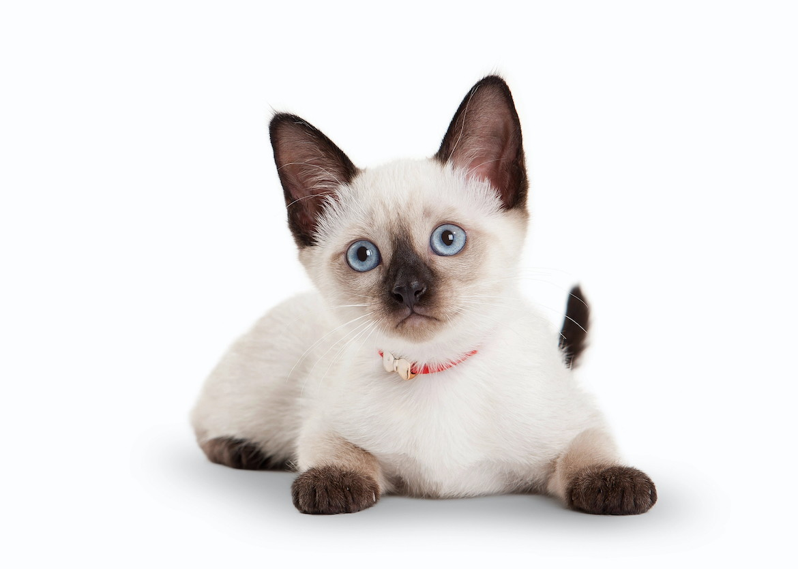
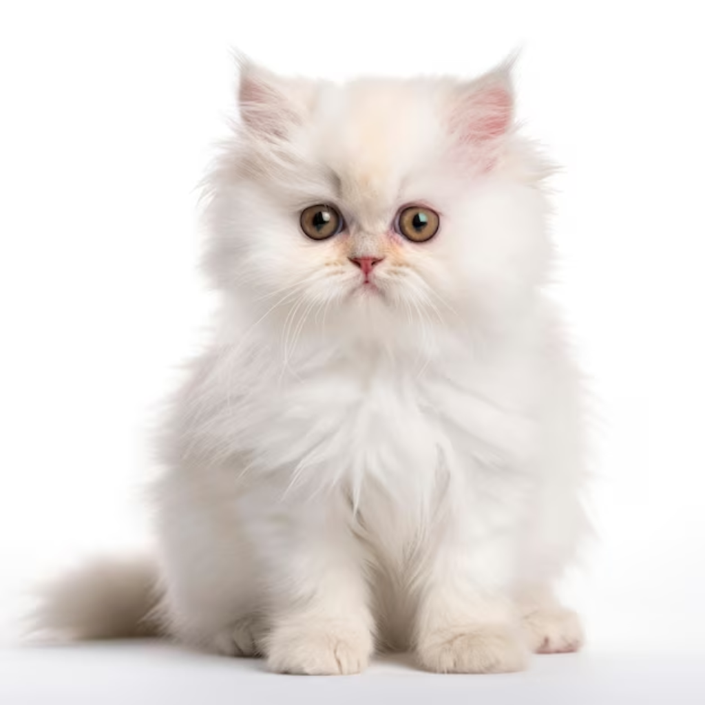
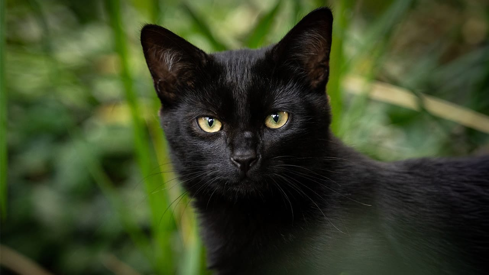

Gatos por Razas

Gato Siamés
Los gatos siameses son una de las razas felinas más antiguas y reconocidas, originaria de Tailandia (antes conocida como Siam). Estos gatos tienen un cuerpo esbelto, musculoso y elegante, con patas largas y una cabeza triangular que destaca por sus grandes orejas puntiagudas. Sus ojos almendrados de color azul intenso y su pelaje corto y brillante con patrón "colorpoint" (cuerpo claro y extremidades oscuras) los hacen inconfundibles.

Gato Persa
Es un gato de tamaño mediano a grande, con un cuerpo robusto, patas cortas y una cabeza redondeada. Sus rasgos más distintivos son su cara achatada (braquicefálica), ojos grandes y expresivos, y su pelaje largo, denso y sedoso que puede presentarse en una amplia variedad de colores y patrones, desde sólidos hasta bicolores o tricolores.El gato persa es una de las razas más antiguas y populares del mundo, reconocida por su apariencia majestuosa y su carácter tranquilo.

Gato Bombay
La raza Bombay es un gato doméstico conocido por su elegante pelaje negro y su apariencia similar a una pantera en miniatura. Su nombre proviene de la ciudad de Bombay (actual Mumbai), en la India, debido a su parecido con las panteras negras de la región. Los bombay son gatos de tamaño mediano, con una constitución musculosa y compacta. Su pelaje es corto, denso y brillante, siempre de un negro sólido, que les otorga un brillo metálico bajo la luz. Sus ojos son grandes, redondos y de un color dorado o ámbar intenso, lo que resalta aún más su apariencia elegante y misteriosa. Además, tienen una cara redonda y orejas medianas, lo que les da un aspecto muy distintivo.
Cuidado de Gatos
Alimentación:Los gatos son animales carnívoros, por lo que su dieta debe estar basada principalmente en proteínas de alta calidad, como carne de pollo, pescado o carne de res. Es importante ofrecerles comida balanceada que cubra todas sus necesidades nutricionales, ya sea en forma de croquetas, comida húmeda o una mezcla de ambas. Además, siempre debe haber acceso a agua fresca y limpia para evitar problemas de salud, como las enfermedades urinarias.
Salud:La salud de un gato requiere visitas regulares al veterinario para chequeos generales, vacunaciones y desparacitación. Es importante que tu gato reciba vacunas contra enfermedades comunes como la rabia, la leucemia felina y el virus de la inmunodeficiencia felina. También es fundamental que el veterinario realice revisiones periódicas de dientes, ojos y oídos, ya que los gatos pueden desarrollar problemas en estas áreas.
La personalidad de los gatos
La personalidad de los gatos puede variar significativamente entre individuos, pero existen ciertos rasgos comunes dentro de las razas y tipos de gatos que suelen compartir características similares en cuanto a comportamiento.
Gatos sociables y cariñosos
Algunos gatos tienen una personalidad muy social y disfrutan de la interacción constante con sus dueños. Estos gatos suelen seguir a sus humanos por la casa, pedir caricias y acostarse cerca de ellos. Algunas razas son: Ragdoll, siamés y Maine Coon.
Gatos independientes
Algunos gatos tienen una personalidad más reservada y prefieren la independencia. Aunque pueden disfrutar de la compañía humana, suelen ser más distantes y pasan tiempo a solas. Estos gatos pueden ser menos propensos a buscar caricias, pero son igualmente leales a sus dueños. Las razas que tienden a ser más independientes incluyen: Persa y Abyssinian.

Gatos domésticos
Los gatos domésticos (Felis catus) son una de las especies de animales más populares como mascotas en todo el mundo.
Aunque estén domesticados, los gatos conservan su instinto de caza. A menudo se puede observar a los gatos "cazando" juguetes o acechando presas pequeñas, como insectos. Este comportamiento es muy natural y saludable.
Dato curioso: ¡Un gato puede dormir hasta 16 horas al día!
Diversidad de Gatos
La diversidad en los gatos es notable y se puede apreciar tanto en su morfología, colores, patrones de pelaje, como en su personalidad y comportamientos
Los gatos domésticos (Felis catus) han sido domesticados y criados durante siglos, lo que ha dado lugar a una impresionante variedad de razas y tipos de gatos.